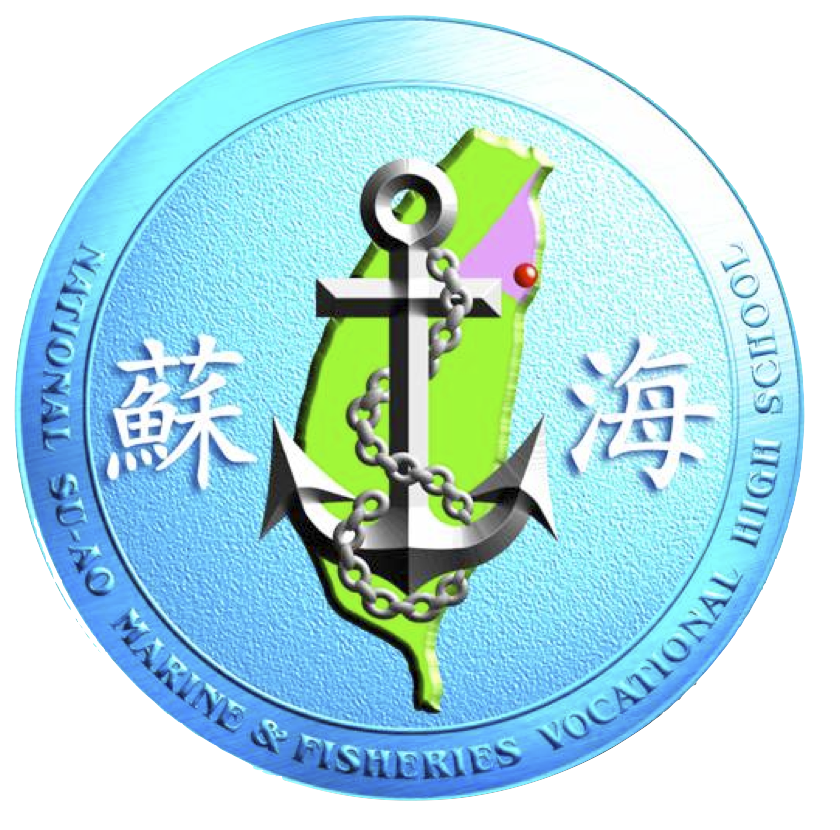

跳至主要內容

國立蘇澳高級海事水產職業學校
National Suao Marine & Fisheries Vocational High School
在校學生
教職員
新生家長
網站導覽
/
原版網站 ↗
認識蘇海
學校簡史
歷任校長
校園風景
交通路線
行政團隊
校長室
教務處
學務處
實習處
輔導室
圖書館
總務處
人事室
主計室
進修部
教學單位
科別探索
漁業科
輪機科
水產食品科
水產養殖科
電子科
航運管理科
觀光事業科（餐飲技術科）
烘培食品科
體育班
國文科
英文科
數理科
校園公告
教學場域
學生園地
教師園地
更多專區
競賽榮耀
影音看蘇海
活動花絮
優質計畫
均質計畫
家長會
校友會
教師會
教育基金會
招生專區
DEPARTMENT OF FISHERIES
漁業科
從蘇澳出發，探索海洋
漁業科實習與教學空間
學校首頁
／
漁業科
Facebook
Instagram
公告
漁業科最新消息，請至消息公佈欄查看。
暫停
NEWS & UPDATES
漁業科消息
2026-11-20
✨★賀【技藝競賽】116級 漁業科 邱博楷 (文化國中) 榮獲115全國海事水產類技藝競賽-漁業職種-金手獎第一名✨
2026-11-20
✨★賀【技藝競賽】116級 漁業科 陳郁淇 (蘇澳國中) 榮獲115全國海事水產類技藝競賽-漁業職種-金手獎第二名✨
2026-11-20
✨★賀【技藝競賽】116級 漁業科 胡椉秉 (吳沙國中) 榮獲115全國海事水產類技藝競賽-漁業職種-金手獎第三名✨
2026-11-20
✨★賀【技藝競賽】116級 漁業科 潘子玄 (文化國中) 榮獲115全國海事水產類技藝競賽-漁業職種-金手獎第四名✨
2026-03-31
◆賀!!112級 漁業科 黃立瑜 (國華國中) 錄取國立臺灣海洋大學 碩士班 環境生物與漁業科學系◆
2026-03-25
✨✨!!狂賀!!114學年 ☆★漁業科★☆ 【!!!!!全班錄取國立大學】!!!!✨✨
2026-03-25
★賀【漁業科-錄取國立大學】115級 漁業科 廖翊捷 (羅東國中) 技優保送 錄取國立臺灣海洋大學-環境生物與漁業科學學系
2026-03-25
★賀【漁業科-錄取國立大學】115級 漁業科 陳詩儀 (中華國中) 技優保送錄取國立臺灣海洋大學-商船學系
更多最新消息
→
CAMPUS MOMENTS
活動剪影
更多活動剪影
→
114學年-技藝競賽
115學年-技藝競賽
113學年-水域活動(相關比賽照片)
二年級 海圖作業
✕
SEARCH SAVS
想找什麼呢？
搜尋範圍：本頁公告與服務連結